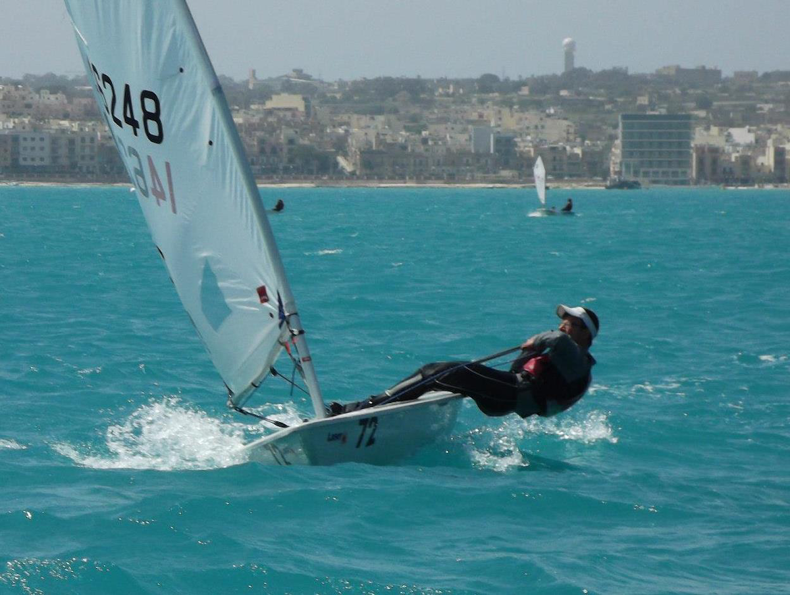
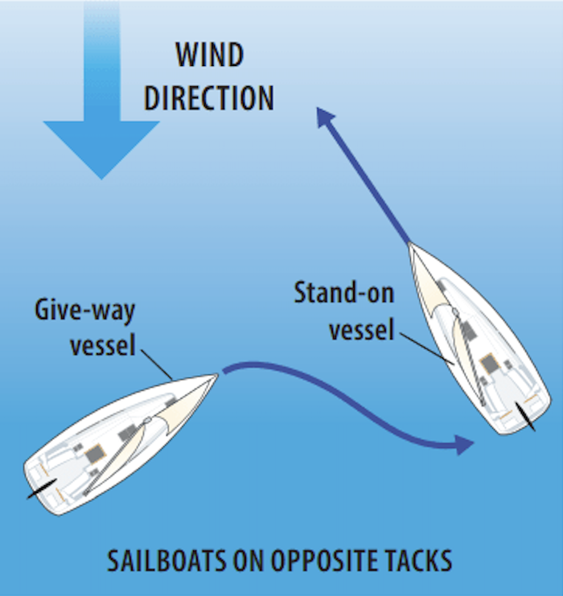
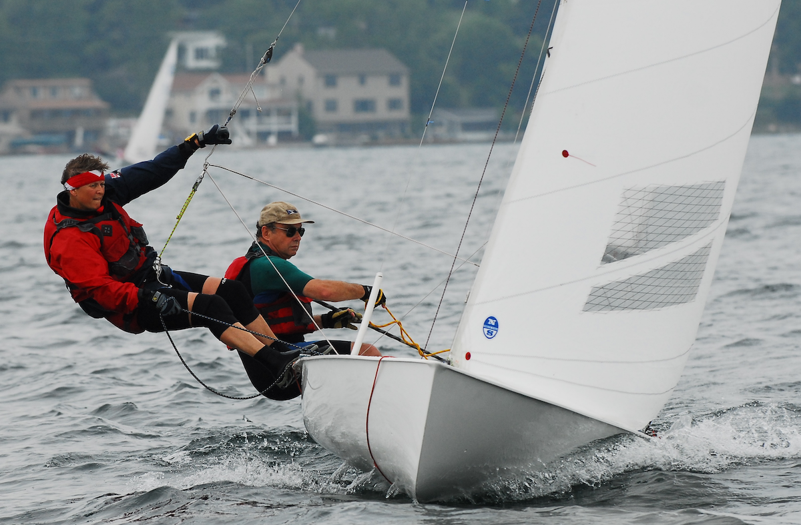

Sailing hiking is a technique used to balance and stabilize a sailboat by having the sailor lean their body out over the side of the boat to counteract the force of the wind on the sails. To do it properly, the sailor places their feet under hiking straps, keeps their back straight, and leans out as far as needed while maintaining control of the tiller and mainsheet. The goal is to keep the boat flatter in the water, which reduces drag and improves speed and efficiency. Sailing hiking offers several benefits, including better boat control, increased performance, and the ability to handle stronger winds safely. It also provides a strong physical workout, engaging the core, legs, and back, making it both a technical skill and a physically demanding aspect of sailing.

Sailing right of way refers to the set of rules that determine which boat must yield and which can maintain its course when two vessels approach each other, helping to prevent collisions on the water. The most fundamental rule is that a boat on port tack (wind coming over the left side) must give way to a boat on starboard tack (wind over the right side). When both boats are on the same tack, the windward boat (the one closer to the wind) must keep clear of the leeward boat. Additionally, an overtaking boat must stay clear of the boat ahead, and vessels under power must generally give way to sailboats. Following these rules ensures safe navigation, predictable movements, and fair sailing, especially in busy waterways or during races, where clear right-of-way decisions are essential.

Sailing trapezing is an advanced technique used on certain high-performance dinghies where the sailor hooks into a harness attached to a wire (the trapeze) and extends their body out over the water to counterbalance the force of the wind on the sails. To do it properly, the sailor clips onto the trapeze wire, places their feet securely on the gunwale, and leans out with a straight, controlled posture while adjusting body position to keep the boat level. This allows the boat to carry more sail power without excessive heeling. Trapezing offers major benefits, including significantly increased speed and performance, greater stability in strong winds, and the ability to sail more aggressively upwind. It also provides an intense physical workout, requiring strong core stability, balance, and coordination, making it both a highly effective and exhilarating sailing skill.